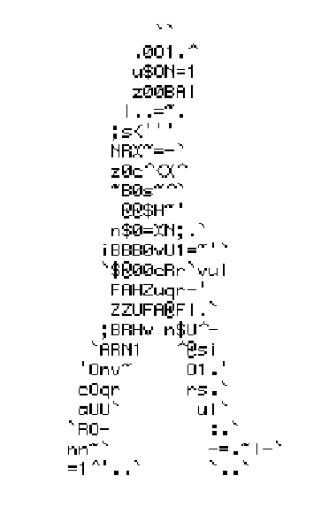

I’m a recent CS graduate based in the Bay Area in California.
I design and build minimal websites focused on aesthetic, clarity, and brand identity.
You can reach me on LinkedIn or email me at jasontello2003@gmail.com.